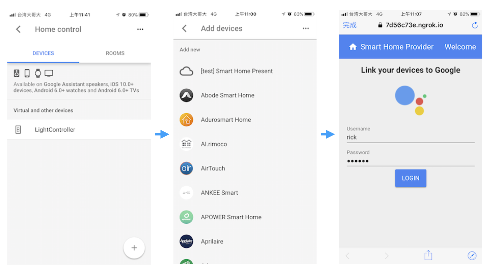
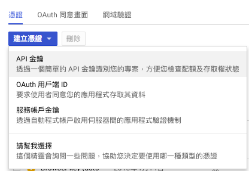
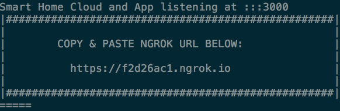

Smart Home
先前介紹過用 Dialogflow 為自己打造語音助手，不曉得是否有人發現，其實旁邊還有一個選項 Smart Home。Smart Home 是 Google 近期推出的項目，有效地將不同廠牌智慧家電做結合，並依賴於家的隔間，例如：廚房的燈、臥室的電視、工作室的冷氣…等，我們可以看一下 Google 提供的影片，體會一下什麼是 Smart Home。
Smart Home 有別於 Dialogflow ，無需進到 App 即可控制設備，直接由 Google Assistant 小姐幫你服務，省去掉了 Talk to my application 流程，能夠更快速的達到控制效果。Smart Home 主要是偏向已經有自有雲，只需提供 fulfillment URL 給 Google 就能完成 Actions 設定， Google 會視情況而下三種 JSON 類型，分別為 SYNC、EXECUTE、QUERY，其相關的動作或回應，都該由自有雲這邊處理，所以也才會在設定上那麼容易，那 SYNC、EXECUTE、QUERY 在做什麼呢?我們繼續看下去。
同步裝置
同步裝置(Syncing devices) 當使用者打開 Google Assistant 的 Home control 添加設備，需要選擇設備廠商，選擇完畢後會有登入頁面，你必須要有廠商的帳號，Google 才能對雲進行身份驗證，確認身份後，Assistant 會收到 OAuth token。在這同時，Assistant 會發出 action.devices.SYNC到雲端自動同步裝置，同步完畢後設定好在家中哪個格局後，即可用 Assistant 做控制。

詳細內容可以參考 Google 提供的流程
當然雲也可以要求Google Assistant再次同步裝置狀態，只需要發出action.intent.REQUEST_SYNC ，Google Assistant 就會再一次的做同步，以下是 Google 提供流程。
執行動作
執行動作(Executing commands)。當使用者向 App 或 Google Home 要求狀態切換時，會先經過一串的語言辨識，若是辨識成功 Assistant 會發出action.devices.EXECUTE
到雲端，雲需要回覆 Google 並且執行動作，而 Google 收到雲回覆後，會將結果回饋給使用者並更新 HomeGraph。
流程圖如下
詢問裝置狀態
詢問裝置狀態(Querying device status)。使用者可以對 Assistant 詢問目前裝置的狀態，例如：What lights are on in the kitchen? Assistant 會發出 action.devices.QUERY 到雲，雲必須回覆裝置狀態，最後回到 HomeGraph，以下流程圖
Smart Home sample
Google 提供了整個 Smart Home 應用範例smart-home-nodejs，依賴 Node.js，所以電腦裡面必須先安裝 Node.js，那我們開始吧！
- 必須在 Actions Console 先擁有專案
- 開啟 HomeGraph API，這將用於請求同步並將狀態報告回HomeGraph。
- 在 Google Cloud Console API Manager左側選單點擊『憑證』
- 選擇建立憑證
- 點擊 API 金鑰
 - 複製金鑰貼在 smart-home-provider/cloud/config-provider.js 檔案裡的 Config.smartHomeProviderApiKey
打開終端機輸入各別輸入以下
1
2
3
4cd smart-home-provider/frontend
npm install -g bower
bower install
cd ..安裝並執行
1
2npm install
npm start在終端機輸出找到client ID 及 client Secret，並記錄起來等等會用到
- 複製終端機出現的網址，打開網頁並前往
 - 登入帳號，預設為下
user: rick
password: oldman - 點擊右上＋，隨意新增裝置，注意請勿把雲符號關閉，且勿重新整理網頁，
否則裝置會不見，因為這只個範例
Actions on Google console
- 回到Actions Console 專案，選擇 Actions Edit，點擊 BUILD
- 填入 fulfillment URL，此網址為上一步，第10點的網址加上 smarthome
- 回到 Overview 填寫 App information (這步驟之前有寫過了)
- 點擊 Account linking 下的 Add
- Grant Type 選擇 Authorization Code
- 填入 Client ID 及 Client secret (之前說要記錄起來的)
- Authorization URL 填入網址+/oauth，即 https://f2d26ac1.ngrok.io/oauth
- Token URL 同理，即 https://f2d26ac1.ngrok.io/token
- 填入其他必要資訊
- 點擊 TEST DRAFT 開始測試 (記得如果改過像URL之類的，都要再點一次 TEST DRAFT)
測試
以下的步驟就是實現同步
- 打開手機 Google Assistant App
- 點擊右上方圖示
- 選擇右上更多圖示
- 選擇 Settings
- 找到 Home control
- 點擊右下 +
- 選擇第一個[test]專案名稱
- 登入 Smart Home sample 的第11步帳號密碼 (這步不要點太快，否則會看到終端機帳號密碼是空的，必須等頁面完全出來再點
- 設定房間
- 點擊右上 Done (Assistant 會跟你說可以試試看哪些命令)
- 試試 turn my lights on …等命令吧 ！
總結
此篇介紹了什麼是 Smart Home，並知道 SYNC、EXECUTE、QUERY 分別在做什麼，且提供了 Smart Home 範例應用，是不是對 Smart Home 有了更進一步的熟悉呢？
如果在實作有遇到任何問題，歡迎問我喔